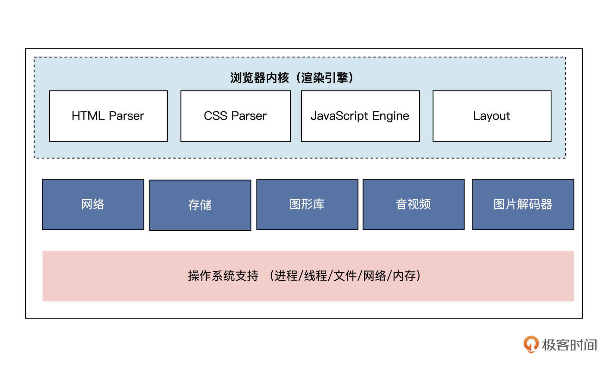
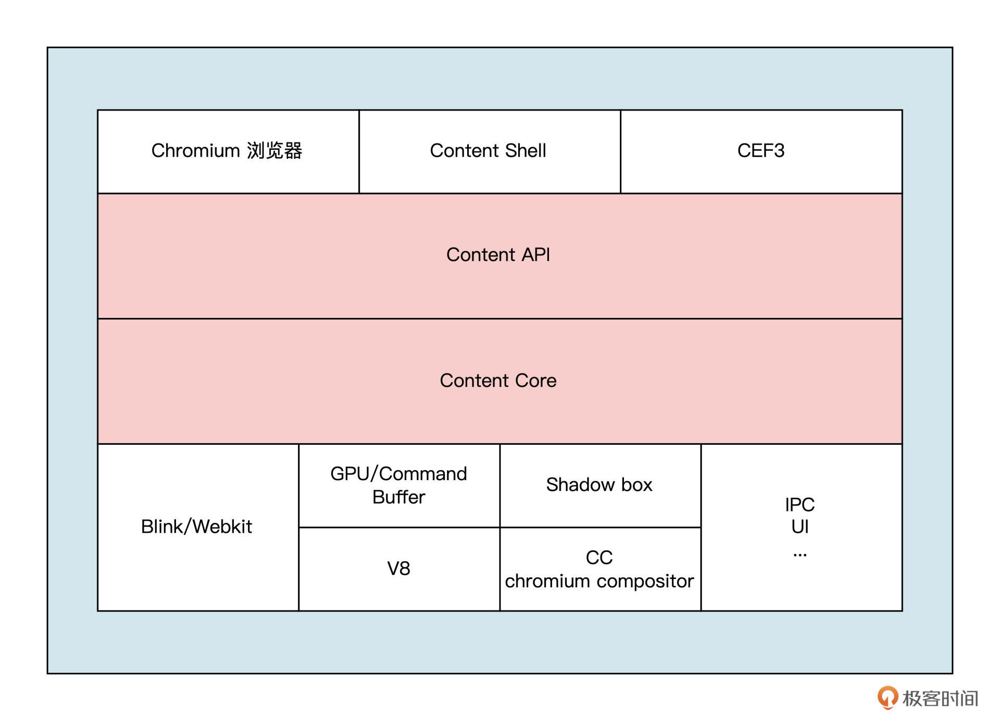
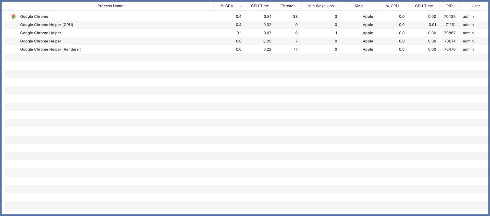
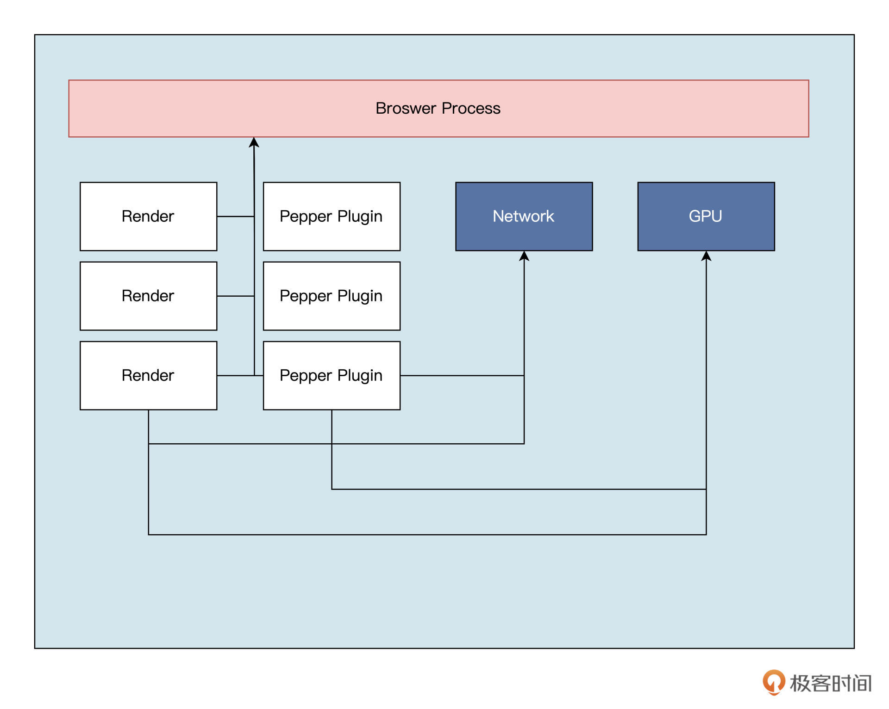
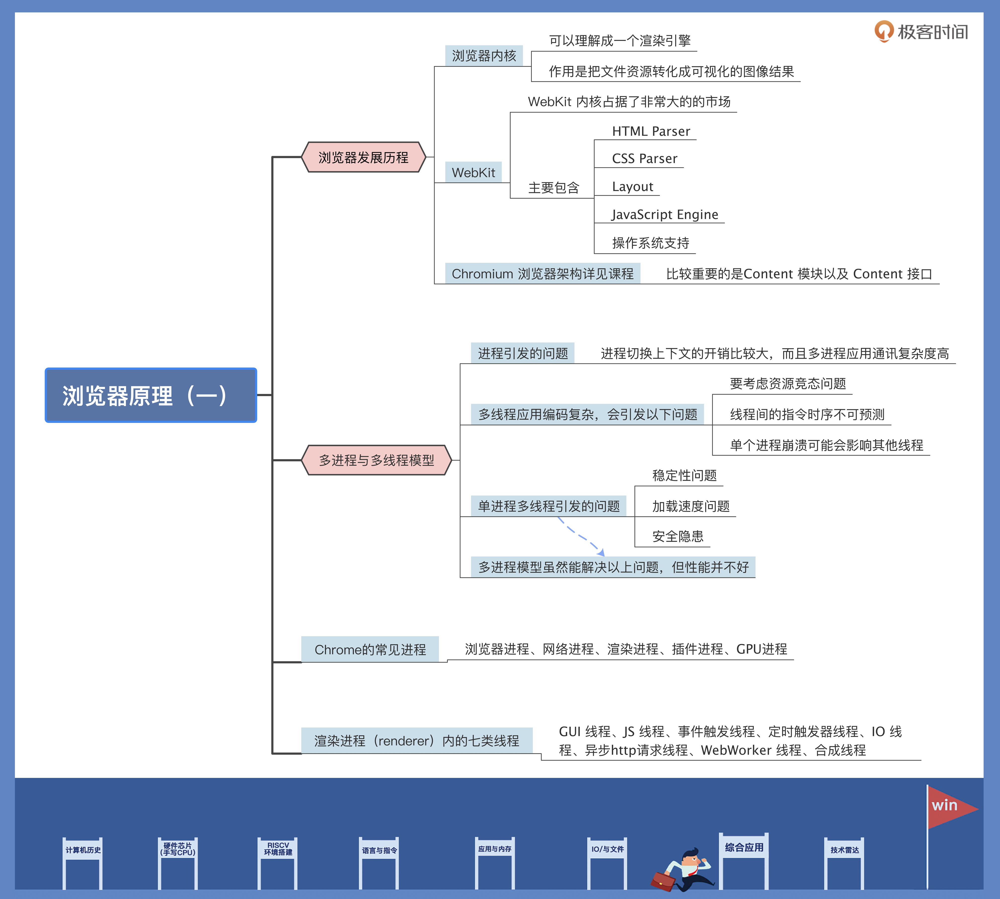

- 00 开篇词 练好基本功，优秀工程师成长第一步.md
- 01 CISC & RISC：从何而来，何至于此.md
- 02 RISC特性与发展：RISC-V凭什么成为“半导体行业的Linux”？.md
- 03 硬件语言筑基（一）：从硬件语言开启手写CPU之旅.md
- 04 硬件语言筑基（二）_ 代码是怎么生成具体电路的？.md
- 05 指令架构：RISC-V在CPU设计上到底有哪些优势？.md
- 06 手写CPU（一）：迷你CPU架构设计与取指令实现.md
- 07 手写CPU（二）：如何实现指令译码模块？.md
- 08 手写CPU（三）：如何实现指令执行模块？.md
- 09 手写CPU（四）：如何实现CPU流水线的访存阶段？.md
- 10 手写CPU（五）：CPU流水线的写回模块如何实现？.md
- 11 手写CPU（六）：如何让我们的CPU跑起来？.md
- 12 QEMU：支持RISC-V的QEMU如何构建？.md
- 13 小试牛刀：跑通RISC-V平台的Hello World程序.md
- 14 走进C语言：高级语言怎样抽象执行逻辑？.md
- 15 C与汇编：揭秘C语言编译器的“搬砖”日常.md
- 16 RISC-V指令精讲（一）：算术指令实现与调试.md
- 17 RISC-V指令精讲（二）：算术指令实现与调试.md
- 18 RISC-V指令精讲（三）：跳转指令实现与调试.md
- 19 RISC-V指令精讲（四）：跳转指令实现与调试.md
- 20 RISC-V指令精讲（五）：原子指令实现与调试.md
- 21 RISC-V指令精讲（六）：加载指令实现与调试.md
- 22 RISC-V指令精讲（七）：访存指令实现与调试.md
- 23 内存地址空间：程序中地址的三种产生方式.md
- 24 虚实结合：虚拟内存和物理内存.md
- 25 堆&栈：堆与栈的区别和应用.md
- 26 延迟分配：提高内存利用率的三种机制.md
- 27 应用内存管理：Linux的应用与内存管理.md
- 28 进程调度：应用为什么能并行执行？.md
- 29 应用间通信（一）：详解Linux进程IPC.md
- 30 应用间通信（二）：详解Linux进程IPC.md
- 31 外设通信：IO Cache与IO调度.md
- 32 IO管理：Linux如何管理多个外设？.md
- 33 lotop与lostat命令：聊聊命令背后的故事与工作原理.md
- 34 文件仓库：初识文件与文件系统.md
- 35 Linux文件系统（一）：Linux如何存放文件？.md
- 36 Linux文件系统（二）：Linux如何存放文件？.md
- 37 浏览器原理（一）：浏览器为什么要用多进程模型？.md
- 38 浏览器原理（二）：浏览器进程通信与网络渲染详解.md
- 39 源码解读：V8 执行 JS 代码的全过程.md
- 40 内功心法（一）：内核和后端通用的设计思想有哪些？.md
- 41 内功心法（二）：内核和后端通用的设计思想有哪些？.md
- 42 性能调优：性能调优工具eBPF和调优方法.md
- 先睹为快：迷你CPU项目效果演示.md
- 加餐01 云计算基础：自己动手搭建一款IAAS虚拟化平台.md
- 加餐02 学习攻略（一）：大数据&云计算，究竟怎么学？.md
- 加餐03 学习攻略（二）：大数据&云计算，究竟怎么学？.md
- 加餐04 谈谈容器云与和CaaS平台.md
- 加餐05 分布式微服务与智能SaaS.md
- 国庆策划01 知识挑战赛：检验一下学习成果吧！.md
- 国庆策划02 来自课代表的学习锦囊.md
- 国庆策划03 揭秘代码优化操作和栈保护机制.md
- 温故知新 思考题参考答案（一）.md
- 用户故事 我是怎样学习Verilog的？.md
- 结束语 心若有所向往，何惧道阻且长.md
37 浏览器原理（一）：浏览器为什么要用多进程模型？
你好，我是 LMOS。
前面我们学过了很多基础理论，你可能已经迫不及待，想把这些知识运用到应用层开发里了。所以从这应用篇开始，我们会学以致用，分析一些开发工作中的实际问题，挑战几个典型的综合应用场景。
这节课我会从浏览器开始讲起，浏览器是目前使用范围最广、使用人数最多的终端应用程序之一。作为互联网中最重要的端口，浏览器伴随着互联网的高速发展，发展也是日新月异。通过接下来的两节课，我希望带你看看巨型软件应用优秀的架构设计，同时也带你了解一下平时用到的浏览器里，有哪些技术原理比较关键。
浏览器原本是很简单的东西，只能渲染简单的页面，后来才逐步迈进百花齐放的阶段。
浏览器内核的演变史
我先带你梳理一下浏览器的发展过程。了解了这段历史，你就会重新理解WebKit内核和Chrome浏览器的地位，知道它们是怎么演变而来的。
说起浏览器，我们就不得不提到1994年诞生的网景浏览器（从Mosaic浏览器衍生而来）。虽然网景浏览器只能展示最简单的 HTML 静态页面，不支持动态的脚本（JavaScript）和样式（CSS），但是它仍然获得了很大的成功。
在操作系统中，内核是最基本的功能，随着浏览器的发展，在浏览器中，现在同样也存在内核的概念。浏览器内核的作用相对更加简化，浏览器内核的英文名为 Rendering Engine，你可以把它理解成一个渲染引擎，用途就是把文件资源转化成可视化的图像结果。
浏览器常见的浏览器内核有：Blink、WebKit、Gecko、Trident 等，目前 WebKit 内核占据了非常大的的市场，包括 Chrome、Safari、安卓浏览器等市面上的主流浏览器，都使用了 WebKit 内核。
从WebKit看浏览器内核架构
既然 WebKit 这么经典，我们就以它为例来看一下浏览器内核的架构。浏览器内核主要包含：HTML Parser，CSS Parser，Layout，JavaScript Engine 几部分，如下图所示：

我们简单看一下，上图中的几个关键部分承担了什么工作：
- HTML Parser：HTML 解析器，负责 HTML 文本的解析，将 HTML 解析为可编程结构 —— DOM （文档对象模型）树；
- CSS Parser：CSS 解析器是层叠样式的解析器，用来计算布局所需要的节点样式信息 —— CSSOM（样式）树；
- Layout：布局，在 得到 DOM 树和 CSSOM 树后，需要计算出DOM树中可见元素的几何位置，生成布局树 —— Layout Tree；
- JavaScript Engine：JavaScript语言的解析引擎，执行页面的动态逻辑，并可以访问 DOM 和 CSSOM 数据接口；
- 操作系统支持 —— 移植：WebKit 代码中，因为其天生具有跨平台性质，所以部分平台相关的能力需要做跨平台兼容的移植。
上面是一个简略的浏览器内核的功能，不过它仅仅是完成了核心的渲染过程，实际上浏览器则要复杂得多。
在 2013 年，Chromium 发布了 Blink 项目。这个项目是从 WebKit 项目独立出来的，它抽离出了一套新的编程接口和进程模型接口，同时浏览器内核屏蔽了 Chromium 底层的进程模型实现。
Chromium 浏览器架构解读
我们会以 Chromium 浏览器为例，来分析浏览器及其内核。后面是 Chromium 的简易架构图，为方便分析，我删去了部分细节。

在上图中，比较重要的是Content 模块以及 Content 接口。
你可以这样理解，Content 模块和接口是浏览器对渲染过程的抽象，它们将浏览器的渲染、插件、沙箱等功能，进行了包装和抽象，提供一个接口层，方便上层的应用调用。Chromium 中我们可以看到的浏览器可视化界面，它构建在 Content 接口之上，用于接收用户交互和展示界面，content shell 是一个简易版的浏览器，通常被第三方浏览器软件进行二次开发，它在 Andriod 系统上也应用广泛。
浏览器下的多进程与多线程模型
Chromium和 Blink最大的一个特性就是采用了新的进程模型和线程模型。在前面进程篇的课程中我们了解到，进程是应用程序运行时操作系统进行资源分配的最小容器，这些资源包括指令集、独立内存空间、IO、PCB 等等。
不过，进程虽然能帮助我们更方便地分配资源，也会引发一些问题：
- 进程切换上下文的开销比较大。由于虚拟内存的存在，我们需要从硬盘中频繁读写；-
- 多进程应用通讯复杂度高。由于操作系统的保护策略，系统资源跨进程是无法共享的。如果需要跨进程共享资源就要采用 IPC 通讯 ，但是成本相对高。
线程则是CPU调度的基本单位。线程的优点显而易见，切换成本很低，只有少量 CPU 寄存器、堆栈等内容，线程的创建、销毁本身也有性能成本，但这个成本相对较低，而且通常可以通过线程池优化。
不过我们也要关注到不足之处，多线程应用编码复杂度高，这会带来后面这几个问题：
- 线程可以共享进程内的所有资源，但需要考虑资源竞态问题；-
- 线程间的指令时序不可预测，无法保证代码按照预期的顺序执行；-
- 单个进程崩溃可能会影响其他线程。
那么在目前常见的 Chrome 浏览器里，采用的是多进程还是单进程多线程模型呢？在我们的电脑中，我打开进程管理器，就可以看到浏览器的后台进程占用情况。通常后台都存在多个进程：

其实在一些旧的浏览器中，采用的是单进程多线程的模型，如 IE 浏览器；但是以 Chromium 浏览器为例的现代浏览器，采用的都是多进程架构。
那么为什么现代浏览器采用的是多进程架构呢？我们需要先分析一下，浏览器如果是单进程多线程会引发哪些问题。
首先是稳定性的问题。因为一个浏览器程序，是可以同时启动多个 Tab 的，浏览器多进程化的最大的好处就是，单个 Tab 的卡死、崩溃不会影响其它 Tab。
我们在浏览器程序内新建一个 Tab 时，就会启动一个新的渲染进程，Chrome 支持四种不同的进程模型模型：
- Process-per-site-instance。这种进程模型会为每一个同一个域的实例都会创建一个Renderer进程。
- Process-per-site。这种进程模型会为不同一个域创建独立的进程，同一域的不同实例共享同一个进程。
- Process-per-tab。这种进程模型会为每个标签页创建一个 Renderer 进程。
- Single process。这种进程模型不为页面创建任何独立的进程，所有渲染工作都在browser进程中（这种模式是实验性质的，不推荐使用）。
Chromium默认采用 Process-per-site-instance 方式，不过我们可以在浏览器启动时传递一个命令行开关，用来指定浏览器的进程模型。
其次，是加载速度的问题。由于整个程序只存在一个进程，浏览器的 JS 代码和插件逻辑和页面渲染是运行在同一个进程中的，如果存在一些计算量很大的操作，这些计算量大的线程会抢占大量资源，从而导致其他的渲染逻辑无法正常执行。这会严重影响页面的加载速度，甚至造成崩溃。在多进程架构下，将插件提取为单独的进程，不会存在插件卡顿和崩溃影响整个浏览器的情况。
最后还有安全性的考虑。由于 JS 脚本和插件的存在，很容易利用浏览器的系统漏洞，进而获得整个计算机的权限，从而造成安全问题。而多进程架构很容易就可以实现沙箱控制。
虽然采用多进程模型就可以解决上述几个问题，但是多进程模型也不是银弹，它同样也会引发一些问题。
比如性能的问题，由于基础的指令无法共享，多进程会带来很大程度的资源浪费，这也是我们很多同学吐槽的“Chrome 非常吃内存”这个问题。由于每个 Tab 和插件都是一个独立的进程，所以在打开多个 Tab 或者插件的情况下，我们会看到系统的内存会疯狂飙升。
这其实是设计上存在的问题，随着时间的发展，硬件性能瓶颈的突破也会推动软件架构发展。现在计算机内存越来越大，没有过去那么宝贵了，所以不同的选择，都是有利有弊。
Chrome 有哪些进程
现在，我们知道了浏览器采用的是多进程模型，那么具体有哪些常见进程呢？我们结合后面这张图来看看。

图中的方框表示具体的进程，连线表示进程间进行的通信，没有连线则表示不会发生进程通信。比如多个渲染进程之间不会进行通信，它们会通过主进程交互， NPAPI插件也不会和 GPU 进行交互，因为它太过于古老，所以没有 GPU 的接口实现。
图中我们可以看到以下几种进程：
- 浏览器进程：主要负责用户交互、子进程管理和文件储存等功能；
- 网络进程：浏览器主进程和渲染进程通过他来向操作系统申请端口以及与操作系统的协议栈进程通信；
- 渲染进程：主要职责是把从网络下载的HTML、JavaScript、CSS、图片等资源解析为可以显示和交互的页面；
- 插件进程：主要负责单个插件功能的运行；
- GPU 进程：主要负责3D效果的实现以及UI的绘制。
这里我们着重了解一下渲染进程（renderer）内的主要线程。渲染进程内部是多线程的，在内核控制下各线程相互配合以保持同步。那么渲染进程内部具体有哪些线程呢？一共有八类：
- GUI 线程：负责渲染浏览器中的页面，并解析 HTML，CSS；
- JS 线程：负责处理 JavaScript 脚本程序；
- 事件触发线程：归属于浏览器而不是 JS 引擎，用来控制事件循环；
- 定时触发器线程：浏览器的定时任务，如 setInterval 与 setTimeout事件，也包括浏览器内部的一些定时任务。
- IO 线程：用来和其他进程进行 IPC 通信，接受发送消息；
- 异步http请求线程：处理所有的异步请求，如果有回调函数，就放入异步事件队列，由事件触发线程处理；
- WebWorker 线程：每声明一个 WebWorker 就会新建一个 WebWorker 线程处理；
- 合成线程：在GUI渲染后执行，将GUI渲染线程生成的产物转换为位图。
重点回顾
这节课告一段落，我给你做个总结吧。
今天我们先简单分析了WebKit和Chromium的架构，它们俩在浏览器里是非常经典的设计。
然后，我们讨论了 Chrome 浏览器里，采用的模型是多进程，还是单进程多线程。Chrome 浏览器使用了多进程模型解决了一些历史问题，它内部有负责统领全局的浏览器主进程、负责网络交互的网络进程、负责页面渲染的渲染进程、负责插件运行的独立插件进程以及负责3D效果的 GPU 进程。
这里重点说说渲染进程，它主要负责单个 Tab 内的页面渲染逻辑，在渲染进程内又是多线程的，在浏览器内核控制下各线程相互配合以保持同步，高效协作。
在各个进程和线程的配合下，浏览器会进行一系列的动作完成渲染，我们称之为渲染流水线，就是从接受网络请求开始，到将其处理成可展示的图形和用户进行交互的过程。那这个过程具体如何运转呢？我们下节课再继续讨论。
这节课导图如下所示，供你复习回顾：

思考题
浏览器的多进程模型下，进程之间是如何通信的呢？
期待你在留言区说说自己的思考。也推荐你把这节课分享给更多同事、朋友。
© 2019 - 2023 Liangliang Lee. Powered by Vert.x and hexo-theme-book.